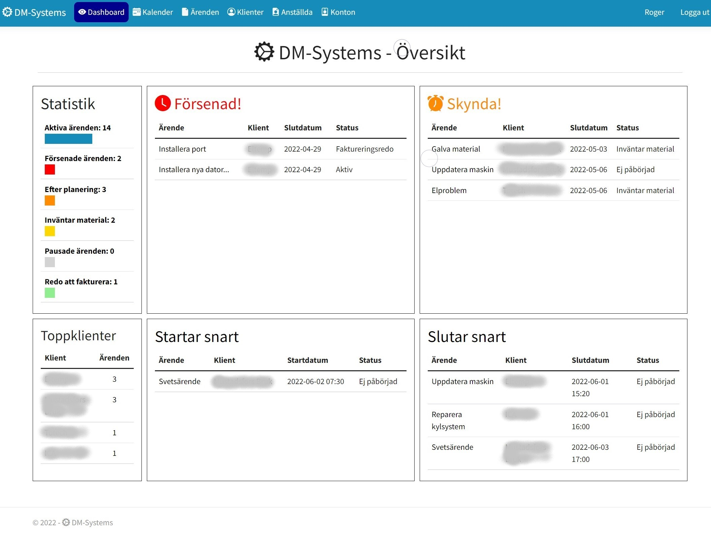
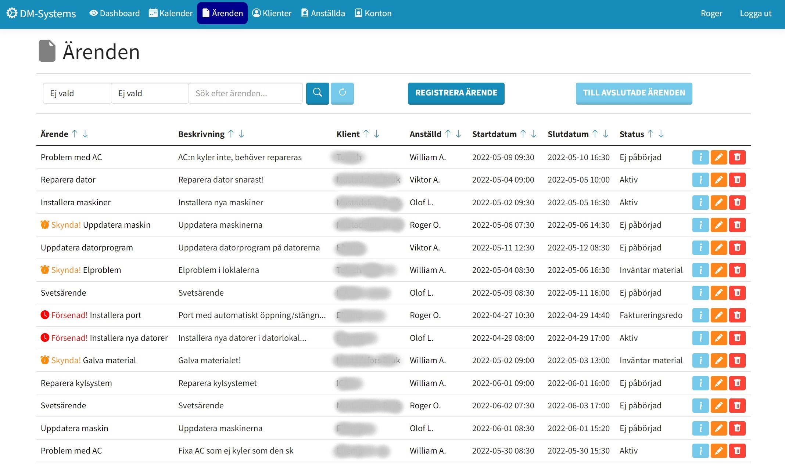
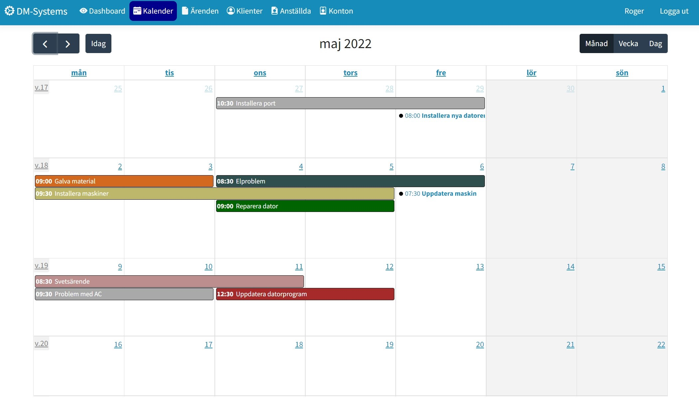

Med fokus på ärendehantering & tidsplanering
Detta är ett ERP-system som utvecklades under examensarbetet, där poängen var att utveckla och anpassa en avgränsad del av ett ERP-system för ett mindre företag som behövde förbättrad ärendehantering och tidsplanering.
Översiktsvy / Dashboard
Detta är översiktsvyn, även kallad dashboard, som samlar all relevant information på ett ställe. Det är här som anställda exempelvis kollar i början av arbetsdagen för att snabbt se vad de ska lägga fokus på.
Ärenden kategoriseras i fyra olika rutor beroende på deras planeringsstatus. Det finns också statistik till vänster om ärenden, samt en lista över klienter med mest aktiva ärenden
Ärendevy
Här visas samtliga ärenden som ej är avslutade. De kan filtreras på olika sätt genom att exempelvis trycka på pilar vid rubriker (fallande & stigande ordning), söka med ord och prioriteras med olika filter. Dessa ärenden har tre knappar, där en tar användaren till en detaljvy, en annan till en redigeringsvy och den sista raderar ärendet. Det finns liknande vyer för anställda och klienter med samma funktionalitet för att hantera dem.
I ärendevyn kan användaren registrera nya ärenden genom att trycka på motsvarig knapp, vilket tar den till en sida där den fyller i samtlig information. Det går också att navigera till avslutade ärenden för att se historik över avslutade ärenden. Ifall de anses vara irrelevanta kan de raderas från databasen genom att trycka på radera knappen.
Kalender
Kalendern visar alla icke-avslutade ärenden som är registrerade i systemet. Ifall ett nytt ärende registreras förs det autmatiskt in här. Detta underlättar tidsplanering eftersom användaren kan få en snabb överblick över hur arbetsbelastningen ser ut.
Det går att trycka på samtliga ärenden vilket tar användaren till motsvarande ärendets detaljvy. Det går att skifta från månadsvy, veckovy och dagsvy för att ge olika nivåer av översikt.